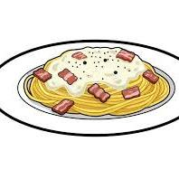

Carbonara Pasta

Description
Carbonara is a classic Roman pasta dish made with spaghetti, eggs, grated Pecorino Romano cheese, black pepper, and crispy pancetta. It's creamy without using any cream — the sauce forms from the heat of the pasta.
Ingredients
- Spaghetti
- Pancetta or bacon
- Egg Yolk
- Pecorino Romano cheese
- Black pepper
- Salt
Steps
- Cook spaghetti in salted water until al dente.
- In a pan, cook pancetta until crispy.
- In a bowl, mix eggs, grated cheese, and black pepper.
- Drain the pasta, saving a bit of the cooking water.
- Mix the hot pasta with the pancetta, then add the egg mixture off the heat.
- Stir quickly to create a creamy sauce (add a little pasta water if needed).
- Serve immediately with extra cheese and pepper.
Home